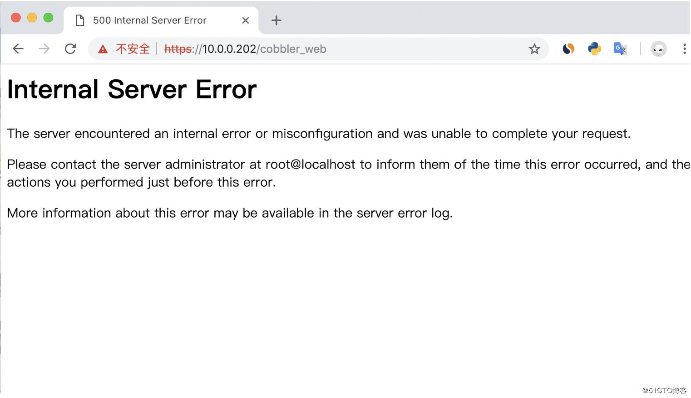
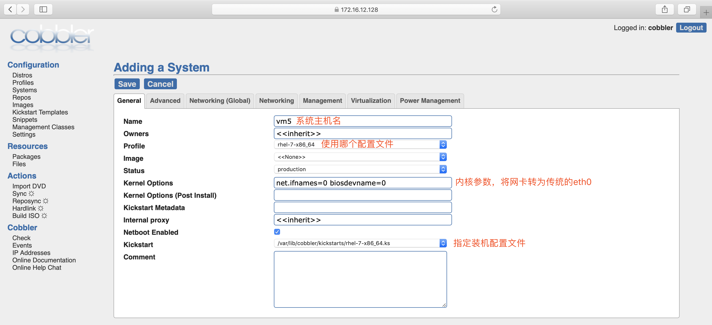
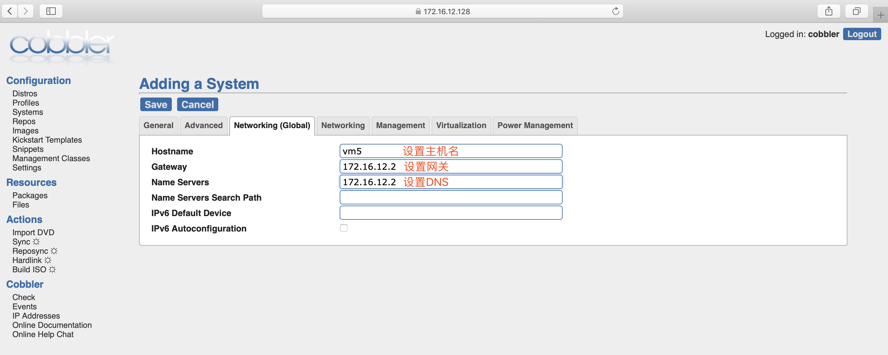

cobbler

文章目录
1. cobbler简介
Cobbler是一个Linux服务器安装的服务，可以通过网络启动(PXE)的方式来快速安装、重装物理服务器和虚拟机，同时还可以管理DHCP，DNS等。
Cobbler可以使用命令行方式管理，也提供了基于Web的界面管理工具(cobbler-web)，还提供了API接口，可以方便二次开发使用。
Cobbler是较早前的kickstart的升级版，优点是比较容易配置，还自带web界面比较易于管理。
Cobbler内置了一个轻量级配置管理系统，但它也支持和其它配置管理系统集成，如Puppet，暂时不支持SaltStack。
Cobbler官网
cobbler集成的服务
- PXE服务支持
- DHCP服务管理
- DNS服务管理(可选bind,dnsmasq)
- 电源管理
- Kickstart服务支持
- YUM仓库管理
- TFTP(PXE启动时需要)
- Apache(提供kickstart的安装源，并提供定制化的kickstart配置)
cobbler配置文件详解
cobbler配置文件目录在/etc/cobbler
| 配置文件 | 作用 |
|---|---|
| /etc/cobbler/settings | cobbler 主配置文件 |
| /etc/cobbler/iso/ | iso模板配置文件 |
| /etc/cobbler/pxe | pxe模板配置文件 |
| /etc/cobbler/power | 电源配置文件 |
| /etc/cobbler/user.conf | web服务授权配置文件 |
| /etc/cobbler/users.digest | web访问的用户名密码配置文件 |
| /etc/cobbler/dhcp.template | dhcp服务器的的配置模板 |
| /etc/cobbler/dnsmasq.template | dns服务器的配置模板 |
| /etc/cobbler/tftpd.template | tftp服务的配置模板 |
| /etc/cobbler/modules.conf | 模块的配置文件 |
cobbler数据目录
| 目录 | 作用 |
|---|---|
| /var/lib/cobbler/config/ | 用于存放distros，system，profiles等信息配置文件 |
| /var/lib/cobbler/triggers/ | 用于存放用户定义的cobbler命令 |
| /var/lib/cobbler/kickstart/ | 默认存放kickstart文件 |
| /var/lib/cobbler/loaders/ | 存放各种引导程序以及镜像目录 |
| /var/www/cobbler/ks_mirror/ | 导入的发行版系统的所有数据 |
| /var/www/cobbler/images/ | 导入发行版的kernel和initrd镜像用于远程网络启动 |
| /var/www/cobbler/repo_mirror/ | yum仓库存储目录 |
cobbler日志文件
| 日志文件路径 | 说明 |
|---|---|
| /var/log/cobbler/installing | 客户端安装日志 |
| /var/log/cobbler/cobbler.log | cobbler日志 |
cobbler命令详解
1 2 3 4 5 6 7 8 |
cobbler check //核对当前设置是否有问题 cobbler list //列出所有的cobbler元素 cobbler report //列出元素的详细信息 cobbler sync //同步配置到数据目录,更改配置最好都要执行下 cobbler reposync //同步yum仓库 cobbler distro //查看导入的发行版系统信息 cobbler system //查看添加的系统信息 cobbler profile //查看配置信息 |
2. cobbler服务端部署
1 2 3 4 5 6 7 8 9 10 11 12 13 14 15 16 17 18 19 20 21 22 23 24 25 26 27 28 29 30 31 32 33 34 35 36 37 38 39 40 41 42 43 44 45 46 47 48 49 50 51 52 53 54 55 56 57 58 59 60 61 62 63 64 65 66 67 68 69 70 71 72 73 74 75 76 77 78 79 80 81 82 83 84 85 86 87 88 89 90 91 92 93 94 95 96 97 98 99 100 101 102 103 104 105 106 107 108 109 110 111 112 113 114 115 116 117 118 119 120 121 122 123 124 125 126 127 128 129 130 131 132 133 134 135 136 137 138 139 140 141 142 143 144 145 146 147 148 149 150 151 152 153 154 155 156 157 158 159 160 161 162 163 164 165 166 167 168 169 170 171 172 173 174 175 176 177 178 179 180 181 182 183 184 185 186 187 188 189 190 191 192 193 194 195 196 197 198 199 200 201 202 203 204 205 206 207 208 209 210 211 212 213 214 215 216 217 218 219 220 221 222 223 224 225 226 227 228 229 230 231 232 233 234 235 236 237 238 239 240 241 242 243 244 245 246 247 248 249 250 251 252 253 254 255 256 257 258 259 260 261 262 263 264 265 266 267 268 269 270 271 272 273 274 275 276 277 278 279 280 281 282 283 284 285 286 287 288 289 290 291 292 293 294 295 296 297 298 299 300 301 302 303 304 305 306 307 308 309 310 311 312 313 314 315 316 317 318 319 320 321 322 323 324 325 326 327 328 |
配置yum源 [root@localhost ~]# curl -o /etc/yum.repos.d/CentOS7-Base-163.repo http://mirrors.163.com/.help/CentOS7-Base-163.repo [root@localhost ~]# sed -i 's/\$releasever/7/g' /etc/yum.repos.d/CentOS7-Base-163.repo [root@localhost ~]# sed -i 's/^enabled=.*/enabled=1/g' /etc/yum.repos.d/CentOS7-Base-163.repo [root@localhost ~]# yum -y install epel-release 安装过程略。。。。 安装cobbler以及相关的软件 [root@localhost ~]# yum -y install httpd dhcp tftp python-ctypes cobbler xinetd cobbler-web pykickstart 安装过程略.... 启动服务并设置开机自启 [root@localhost ~]# systemctl start httpd [root@localhost ~]# systemctl start cobblerd [root@localhost ~]# systemctl enable httpd Created symlink from /etc/systemd/system/multi-user.target.wants/httpd.service to /usr/lib/systemd/system/httpd.service. [root@localhost ~]# systemctl enable cobblerd Created symlink from /etc/systemd/system/multi-user.target.wants/cobblerd.service to /usr/lib/systemd/system/cobblerd.service. 修改server的ip地址为本机ip [root@localhost ~]# sed -i 's/^server: 127.0.0.1/server: 192.168.137.10/' /etc/cobbler/settings 设置tftp的ip地址为本机ip [root@localhost ~]# sed -i 's/^next_server: 127.0.0.1/next_server: 192.168.137.10/' /etc/cobbler/settings 开启tftp [root@localhost ~]# sed -i '/disable/s/yes/no/g' /etc/xinetd.d/tftp 下载缺失文件 [root@localhost ~]# cobbler get-loaders ...... downloading https://cobbler.github.io/loaders/grub-0.97-x86_64.efi to /var/lib/cobbler/loaders/grub-x86_64.efi *** TASK COMPLETE *** 启动rsync并设置开机自启 [root@localhost ~]# systemctl start rsyncd [root@localhost ~]# systemctl enable rsyncd Created symlink from /etc/systemd/system/multi-user.target.wants/rsyncd.service to /usr/lib/systemd/system/rsyncd.service. 生成加密的密码 [root@localhost ~]# openssl passwd -1 -salt "$RANDOM" 'itwhs123!' $1$8280$A4fc8ZnmQZlZjw/hDcN5Z1 //这是密码加密后的形式 将新生成的加密密码加入到配置文件 [root@localhost ~]# vim /etc/cobbler/settings .... //此处为省略内容 default_password_crypted: "$1$8280$A4fc8ZnmQZlZjw/hDcN5Z1" ..... //此处为省略内容 重启cobbler [root@localhost ~]# systemctl restart cobblerd [root@localhost ~]# ss -antl State Recv-Q Send-Q Local Address:Port Peer Address:Port LISTEN 0 128 *:22 *:* LISTEN 0 100 127.0.0.1:25 *:* LISTEN 0 5 127.0.0.1:25151 *:* LISTEN 0 5 *:873 *:* LISTEN 0 128 :::80 :::* LISTEN 0 128 :::22 :::* LISTEN 0 100 ::1:25 :::* LISTEN 0 128 :::443 :::* LISTEN 0 5 :::873 :::* 通过cobbler check 核对当前设置是否有问题 [root@localhost ~]# cobbler check The following are potential configuration items that you may want to fix: 1 : debmirror package is not installed, it will be required to manage debian deployments and repositories 2 : fencing tools were not found, and are required to use the (optional) power management features. install cman or fence-agents to use them Restart cobblerd and then run 'cobbler sync' to apply changes. 以上两个是关于debian系统的错误，请忽略 配置cobbler dhcp 修改cobbler配置文件，让cobbler控制dhcp [root@localhost ~]# sed -i '/^manage_dhcp/s/0/1/g' /etc/cobbler/settings [root@localhost ~]# sed -n '/^manage_dhcp/p' /etc/cobbler/settings manage_dhcp: 1 配置dhcp [root@localhost ~]# vim /etc/cobbler/dhcp.template .... //此处为省略内容 subnet 192.168.137.0 netmask 255.255.255.0 { option routers 192.168.137.10; option domain-name-servers 192.168.137.1; //此处为系统安装好后指定的dns地址 option subnet-mask 255.255.255.0; range dynamic-bootp 192.168.137.100 192.168.137.150; default-lease-time 21600; max-lease-time 43200; next-server $next_server; .... //此处为省略内容 重启服务并同步配置，改完dhcp必须要sync同步配置 [root@localhost ~]# systemctl restart cobblerd [root@localhost ~]# cobbler sync ...... running python trigger cobbler.modules.scm_track running shell triggers from /var/lib/cobbler/triggers/change/* *** TASK COMPLETE *** 检查dhcp是否正常 [root@localhost ~]# netstat -anulp|grep dhcp udp 0 0 0.0.0.0:67 0.0.0.0:* 12692/dhcpd 导入redhat7镜像 [root@localhost ~]# mount /dev/cdrom /mnt mount: /dev/sr0 is write-protected, mounting read-only [root@localhost ~]# cobbler import --path=/mnt --name=rhel-7 --arch=x86_64 ...... Found a candidate signature: breed=redhat, version=rhel6 Found a candidate signature: breed=redhat, version=rhel7 Found a matching signature: breed=redhat, version=rhel7 Adding distros from path /var/www/cobbler/ks_mirror/rhel-7-x86_64: creating new distro: rhel-7-x86_64 trying symlink: /var/www/cobbler/ks_mirror/rhel-7-x86_64 -> /var/www/cobbler/links/rhel-7-x86_64 creating new profile: rhel-7-x86_64 associating repos checking for rsync repo(s) checking for rhn repo(s) checking for yum repo(s) starting descent into /var/www/cobbler/ks_mirror/rhel-7-x86_64 for rhel-7-x86_64 processing repo at : /var/www/cobbler/ks_mirror/rhel-7-x86_64 //导入镜像的位置 need to process repo/comps: /var/www/cobbler/ks_mirror/rhel-7-x86_64 looking for /var/www/cobbler/ks_mirror/rhel-7-x86_64/repodata/*comps*.xml Keeping repodata as-is :/var/www/cobbler/ks_mirror/rhel-7-x86_64/repodata *** TASK COMPLETE *** 说明： --path //镜像路径 --name //为安装源定义一个名字 --arch //指定安装源平台 安装源的唯一标示就是根据name参数来定义，本例导入成功后，安装源的唯一标示就是：CentOS-7-x86_64，如果重复，系统会提示导入失败 查看cobbler镜像列表 [root@localhost ~]# cobbler list distros: rhel-7-x86_64 profiles: rhel-7-x86_64 systems: repos: images: mgmtclasses: packages: files: 创建kickstarts自动安装脚本 [root@localhost ~]# cat > /var/lib/cobbler/kickstarts/Centos-7.6-x86_64.ks <<'EOF' auth --enableshadow --passalgo=sha512 bootloader --location=mbr clearpart --all --initlabel part /boot --asprimary --fstype="ext4" --size=500 part swap --fstype="swap" --size=3072 part / --fstype="ext4" --grow --size=15000 text firewall --disabled firstboot --disable keyboard us lang en_US url --url=http://192.168.137.10/cobbler/ks_mirror/Centos-7.6-x86_64 $yum_repo_stanza reboot rootpw --iscrypted $6$1DqmGBTIZJdzSAGN$i/neDtJQxcA5cAdXns6DPjgL6tSJABJIVsVQg/6MQNrF1FoXjjC6wB8M/jLc8vGv.rNVzINL6R9u2TqF3KeOB1 selinux --disabled skipx timezone Asia/Shanghai --isUtc --nontp install zerombr %packages @^minimal @core kexec-tools %end %addon com_redhat_kdump --enable --reserve-mb='auto' %end %anaconda pwpolicy root --minlen=6 --minquality=1 --notstrict --nochanges --notempty pwpolicy user --minlen=6 --minquality=1 --notstrict --nochanges --emptyok pwpolicy luks --minlen=6 --minquality=1 --notstrict --nochanges --notempty %end EOF 检查ks文件语法是否有误 [root@ct10 ~]# cobbler validateks task started: 2019-06-26_191758_validateks task started (id=Kickstart Validation, time=Wed Jun 26 19:17:58 2019) ---------------------------- osversion: rhel6 checking url: http://192.168.137.10/cblr/svc/op/ks/profile/Centos-7.6-x86_64 running: /usr/bin/ksvalidator -v "rhel6" "http://192.168.137.10/cblr/svc/op/ks/profile/Centos-7.6-x86_64" received on stdout: received on stderr: *** all kickstarts seem to be ok *** *** TASK COMPLETE *** 查看当前cobbler有哪些配置文件 [root@localhost ~]# cobbler profile list Centos-7-x86_64 修改profile，将我们新建的ks文件设为默认的kickstarts安装文件 [root@localhost ~]# cobbler profile edit --name Centos-7.6-x86_64 --kickstart=/var/lib/cobbler/kickstarts/Centos-7.6-x86_64.ks 配置网卡名称为传统网卡名称eth0 [root@localhost ~]# cobbler profile edit --name Centos-7.6-x86_64 --kopts='net.ifnames=0 biosdevname=0' 检查当前系统cobbler配置文件信息 [root@localhost ~]# cobbler profile report Name : Centos-7.6-x86_64 TFTP Boot Files : {} Comment : DHCP Tag : default Distribution : Centos-7.6-x86_64 //仓库名字 Enable gPXE? : 0 Enable PXE Menu? : 1 Fetchable Files : {} Kernel Options : {'biosdevname': '0', 'net.ifnames': '0'} //网卡设为传统命名方式 Kernel Options (Post Install) : {} Kickstart : /var/lib/cobbler/kickstarts/Centos-7.6-x86_64.ks //使用的kickstarts配置文件的路径，必须为我们新建的ks文件的路径 Kickstart Metadata : {} Management Classes : [] Management Parameters : <<inherit>> Name Servers : [] Name Servers Search Path : [] Owners : ['admin'] Parent Profile : Internal proxy : Red Hat Management Key : <<inherit>> Red Hat Management Server : <<inherit>> Repos : [] Server Override : <<inherit>> Template Files : {} Virt Auto Boot : 1 Virt Bridge : xenbr0 Virt CPUs : 1 Virt Disk Driver Type : raw Virt File Size(GB) : 5 Virt Path : Virt RAM (MB) : 512 Virt Type : kvm 同步cobbler [root@localhost ~]# cobbler sync task started: 2019-06-26_192053_sync task started (id=Sync, time=Wed Jun 26 19:20:53 2019) running pre-sync triggers cleaning trees removing: /var/www/cobbler/images/Centos-7.6-x86_64 removing: /var/lib/tftpboot/pxelinux.cfg/default removing: /var/lib/tftpboot/grub/images removing: /var/lib/tftpboot/grub/grub-x86.efi removing: /var/lib/tftpboot/grub/grub-x86_64.efi removing: /var/lib/tftpboot/grub/efidefault removing: /var/lib/tftpboot/images/Centos-7.6-x86_64 removing: /var/lib/tftpboot/s390x/profile_list copying bootloaders trying hardlink /var/lib/cobbler/loaders/grub-x86.efi -> /var/lib/tftpboot/grub/grub-x86.efi trying hardlink /var/lib/cobbler/loaders/grub-x86_64.efi -> /var/lib/tftpboot/grub/grub-x86_64.efi copying distros to tftpboot copying files for distro: Centos-7.6-x86_64 trying hardlink /var/www/cobbler/ks_mirror/Centos-7.6-x86_64/images/pxeboot/vmlinuz -> /var/lib/tftpboot/images/Centos-7.6-x86_64/vmlinuz trying hardlink /var/www/cobbler/ks_mirror/Centos-7.6-x86_64/images/pxeboot/initrd.img -> /var/lib/tftpboot/images/Centos-7.6-x86_64/initrd.img copying images generating PXE configuration files generating PXE menu structure copying files for distro: Centos-7.6-x86_64 trying hardlink /var/www/cobbler/ks_mirror/Centos-7.6-x86_64/images/pxeboot/vmlinuz -> /var/www/cobbler/images/Centos-7.6-x86_64/vmlinuz trying hardlink /var/www/cobbler/ks_mirror/Centos-7.6-x86_64/images/pxeboot/initrd.img -> /var/www/cobbler/images/Centos-7.6-x86_64/initrd.img Writing template files for Centos-7.6-x86_64 rendering DHCP files generating /etc/dhcp/dhcpd.conf rendering TFTPD files generating /etc/xinetd.d/tftp processing boot_files for distro: Centos-7.6-x86_64 cleaning link caches running post-sync triggers running python triggers from /var/lib/cobbler/triggers/sync/post/* running python trigger cobbler.modules.sync_post_restart_services running: dhcpd -t -q received on stdout: received on stderr: running: service dhcpd restart received on stdout: received on stderr: Redirecting to /bin/systemctl restart dhcpd.service running shell triggers from /var/lib/cobbler/triggers/sync/post/* running python triggers from /var/lib/cobbler/triggers/change/* running python trigger cobbler.modules.manage_genders running python trigger cobbler.modules.scm_track running shell triggers from /var/lib/cobbler/triggers/change/* *** TASK COMPLETE *** 为避免发生未知问题，先把服务端所有服务重启 [root@localhost ~]# systemctl restart xinetd [root@localhost ~]# systemctl restart cobblerd [root@localhost ~]# systemctl restart httpd [root@localhost ~]# ss -antl State Recv-Q Send-Q Local Address:Port Peer Address:Port LISTEN 0 128 *:22 *:* LISTEN 0 100 127.0.0.1:25 *:* LISTEN 0 5 127.0.0.1:25151 *:* LISTEN 0 5 *:873 *:* LISTEN 0 128 :::80 :::* LISTEN 0 128 :::22 :::* LISTEN 0 100 ::1:25 :::* LISTEN 0 128 :::443 :::* LISTEN 0 5 :::873 :::* |
3.客户端安装
新建虚拟机从PXE启动，若出现以下界面则表示成功：

4.定制安装
定制安装步骤：
- 统计服务器的MAC地址
- 配置皮匠
- 安装
在访问cobbler web界面到时候出现以下提示

ssl的报错日志如下：
1 2 3 4 5 6 7 |
[root@Cobbler ~]# tail -f /var/log/httpd/ssl_error_log [Mon Jan 07 16:24:53.363029 2019] [:error] [pid 3383] [remote 10.0.0.1:212] mod = importlib.import_module(self.SETTINGS_MODULE) [Mon Jan 07 16:24:53.363032 2019] [:error] [pid 3383] [remote 10.0.0.1:212] File "/usr/lib64/python2.7/importlib/__init__.py", line 37, in import_module [Mon Jan 07 16:24:53.363084 2019] [:error] [pid 3383] [remote 10.0.0.1:212] __import__(name) [Mon Jan 07 16:24:53.363089 2019] [:error] [pid 3383] [remote 10.0.0.1:212] File "/usr/share/cobbler/web/settings.py", line 89, in <module> [Mon Jan 07 16:24:53.363097 2019] [:error] [pid 3383] [remote 10.0.0.1:212] from django.conf.global_settings import TEMPLATE_CONTEXT_PROCESSORS [Mon Jan 07 16:24:53.363124 2019] [:error] [pid 3383] [remote 10.0.0.1:212] ImportError: cannot import name TEMPLATE_CONTEXT_PROCESSORS |
查看cobbler的py配置文件
1 2 3 4 5 6 7 8 |
[root@Cobbler ~]# sed -n '38,41p' /usr/share/cobbler/web/settings.py
if django.VERSION[0] == 1 and django.VERSION[1] < 4:
ADMIN_MEDIA_PREFIX = '/media/'
else:
STATIC_URL = '/media/
[root@Cobbler ~]# sed -n '89p' /usr/share/cobbler/web/settings.py
from django.conf.global_settings import TEMPLATE_CONTEXT_PROCESSORS |
初步判断应该是pythone-django版本问题
1 2 3 4 5 6 7 8 9 10 11 12 13 14 |
#下载pip.py wget https://bootstrap.pypa.io/get-pip.py #调用本地python运行pip.py脚本 python get-pip.py #安装pip pip install Django==1.8.9 #查看pip版本号 python -c "import django; print(django.get_version())" #重启httpd systemctl restart httpd |
最后完美解决
统计mac地址此处就不赘述了，直接最重要的配置 在cobbler的web界面上配置：




同步配置并重启相关服务：
1 2 3 4 |
[root@localhost ~]# cobbler sync [root@localhost ~]# systemctl restart httpd [root@localhost ~]# systemctl restart cobblerd [root@localhost ~]# systemctl restart xinetd |
最后开机自动会安装系统